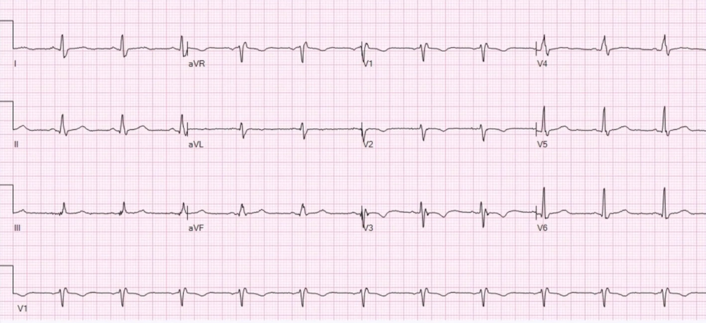
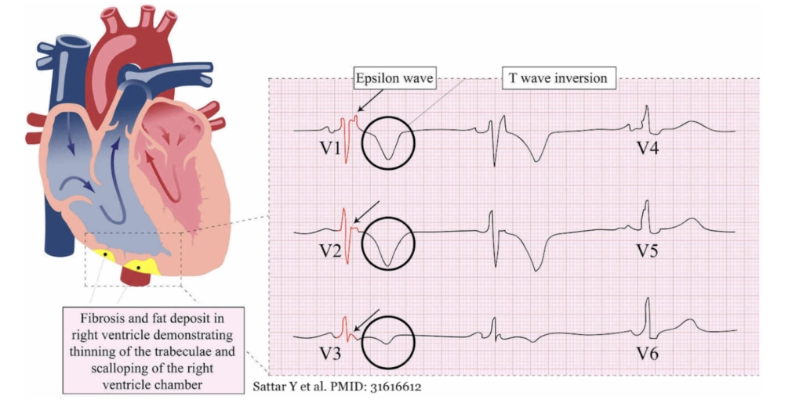

Fall 5
Im Universitätskrankenhaus in Baltimore, Maryland befindet sich eine 26-jährige Frau, die zweimal für ca. 30-60sek. präsynkopal war (Schwindel und Benommenheit). Bei der Untersuchung ist sie vollkommen asymptomatisch mit unauffälligen Vitalwerten.
EKG

Arrhythmogene Rechtsventrikuläre Kardiomyopathie
Bei der ARVC, handelt es sich um eine autosomal-dominant vererbare Erkrankung des Herzmuskels: Dabei wird das
rechtsventrikuläre Myokard zunehmend durch Fett und Bindegewebe ersetzt. Diese "Fett-/Bindegewebsinseln" begünstigen
die Bildung von Reentry-Tachykardien. Diese Kardiomyopathie hat vorallem im Mediteranem Raum eine sehr hohe
Prävalenz. In Italien z.B. sind 40 von 10.000 Menschen betroffen. Damit
ist es dort die häufigste Ursache eines plötzlichen Herztodes bei jungen Sportlern!
Klassisch für diese Erkrankung sind T-Wellen-Inversionen in V1-V3 und die sehr spezifischen Epsilon-Wellen:
Bei der Epsilon-Welle handelt es sich um eine kleine Welle zwischen Ende des QRS-Komplexes und Anfang der T-Welle.
Auf Grund der Ähnlichkeit zu anderen EKG-Zeichen und häufiger Abwesenheit, sollte man sich nicht vollkommen auf
diese Welle verlassen, sondern die gesamte Klinik beurteilen: Unerklärte Synkope während sportlicher Betätigung,
mit einem ungewöhnlichen EKG und positiver Familienanamnese (für plötzlichen Herztod)
